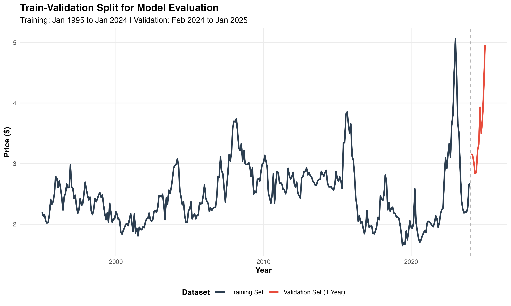
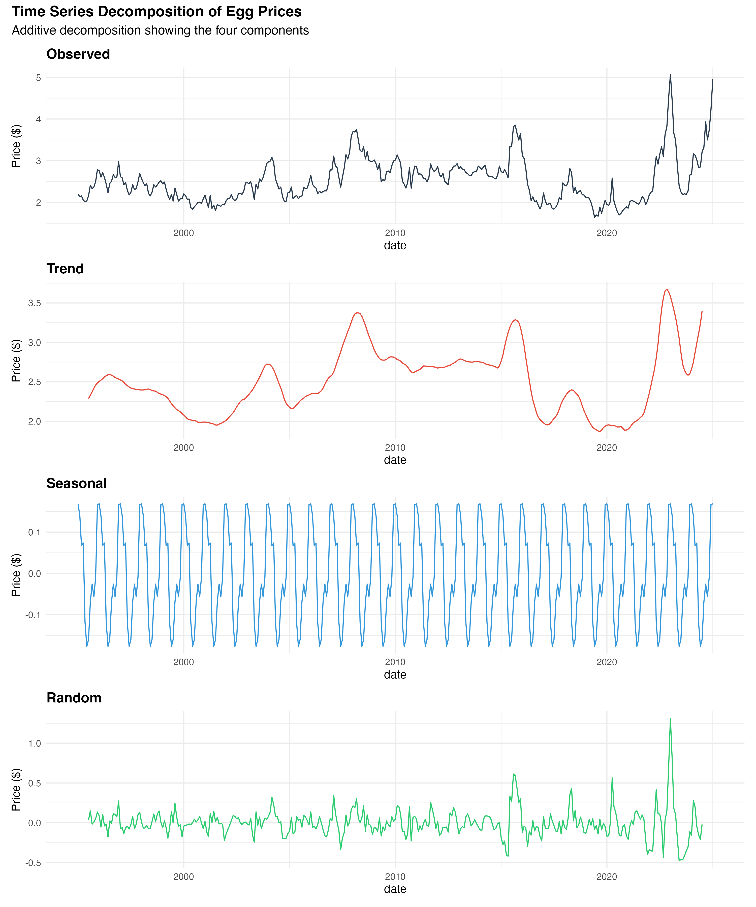
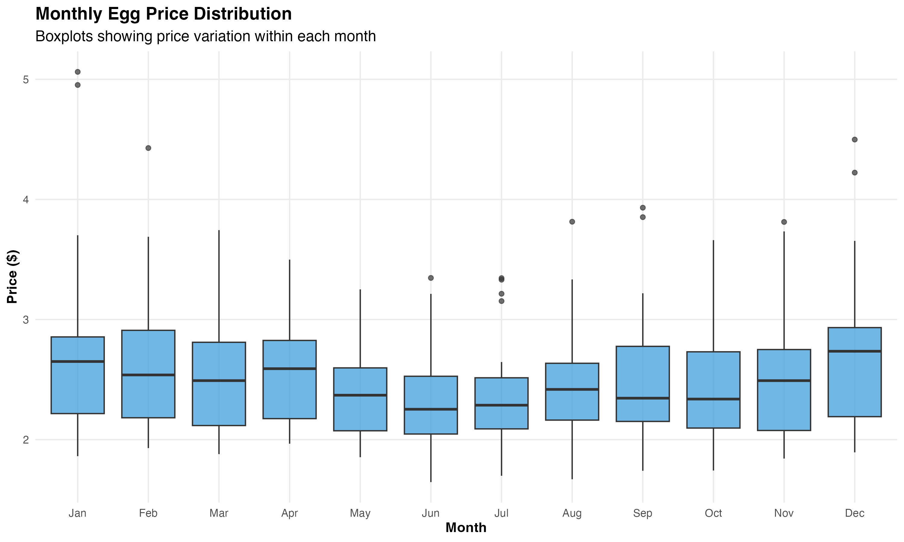
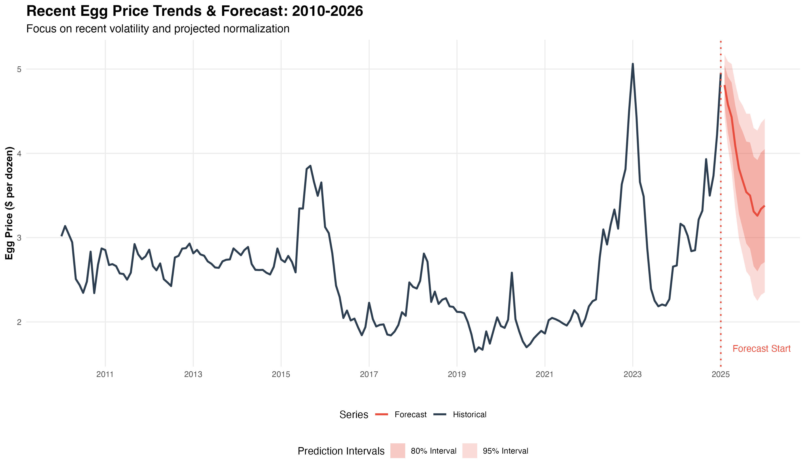

Forecasting Volatile Egg Prices for Procurement Planning
This project uses time-series forecasting to help Mister Smith’s, a local bakery in Vermillion, SD, manage the impact of volatile egg prices. After a sudden spike forced a $0.50 surcharge on egg-based dishes, the bakery needed a way to anticipate future price changes. By analyzing 30 years of monthly U.S. egg price data, the model delivers forward-looking insights to support better cost planning, supplier negotiations, and pricing decisions.
Business Challenge
Mister Smith’s relies heavily on egg-based ingredients. In late 2024, a price spike forced the bakery to apply a $0.50 surcharge on egg items. This triggered customer backlash and hurt margins. The bakery lacked visibility into upcoming price trends. It needed a way to forecast prices ahead of time and build inventory or pricing strategies proactively.
Key Business Questions
- What will egg prices look like over the next 12 months?
- When are prices most likely to spike?
- What is the forecast range, and how can we plan for volatility?
- Can the model support budgeting and supplier planning?
Data Summary
Data was sourced from FRED (Federal Reserve Economic Data) using:
- Nominal Egg Prices: Monthly U.S. city average (Grade A, Large)
- Egg-Specific CPI: Used to inflation-adjust historical prices
The resulting dataset covers Jan 1995 to Jan 2025 — 360+ monthly records with no missing values.

Analytical Approach
The model tested three forecasting approaches:
- Naïve Model
- Exponential Smoothing (ETS)
- ARIMA – selected for final deployment
ARIMA outperformed others on 2024 holdout data. It offered the best balance of accuracy and interpretability under recent volatility.

Key Findings
- Winter price spikes are consistent: December–January saw the highest median and most variable prices.
- Recent volatility breaks the pattern: Forecast error increased in late 2024, underscoring post-pandemic instability.
- ARIMA was most reliable: Despite noise, it offered the best generalizable performance.


Business Recommendations
- Order early for Q4–Q1 to avoid spikes: plan bulk egg purchases in advance
- Use $3.40/dozen as a budgeting anchor for 2025–26
- If prices dip below $3.00, secure fixed-rate supply contracts
- If prices approach $4.50, prepare menu adjustments to protect margins
Assumptions & Limitations
- No external predictors (e.g., feed or fuel costs) were included
- Forecast assumes past trends continue — unexpected shocks may reduce accuracy
- Model selected by cross-validation: ARIMA(4,0,0)(2,0,0)[12] without differencing